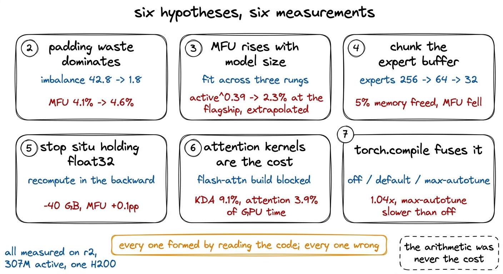
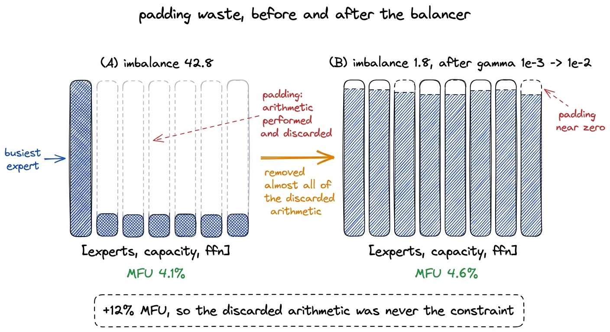
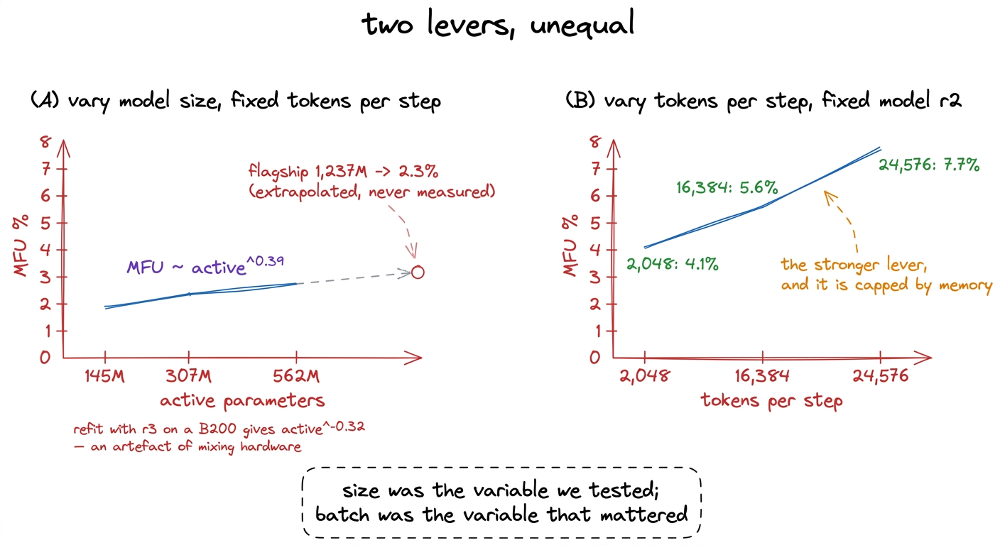
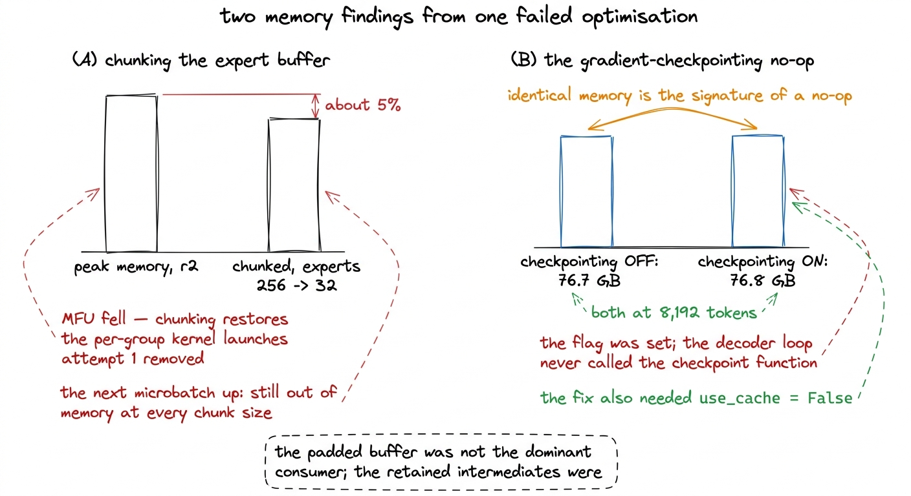
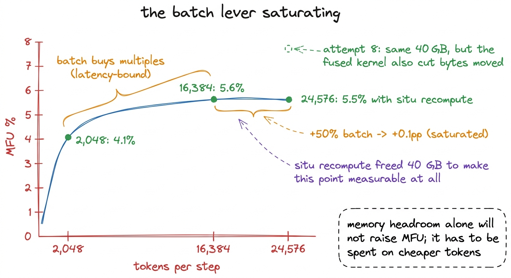
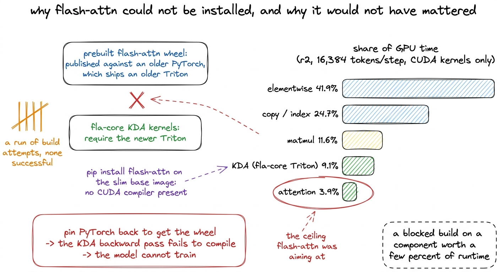
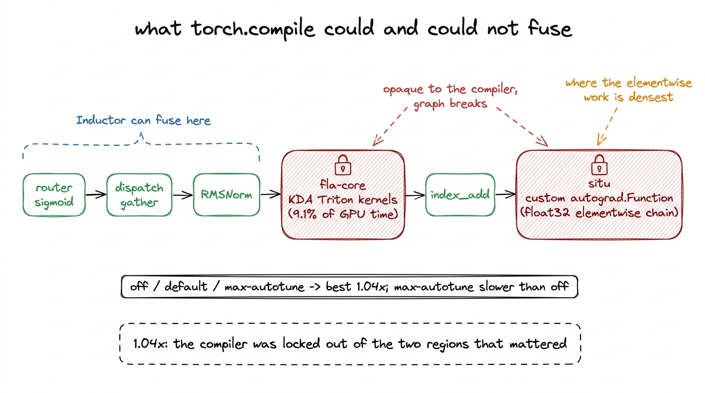

Six ideas that did not work
Padding waste, model size, chunked buffers, float32 activations, attention kernels and torch.compile — each hypothesis, each measurement, and the single profile that explained why all six had to fail.
The previous chapter ends well. Batching the expert dispatch took step time at 2,048 tokens from 3.999 seconds to 0.228, a 17.5x improvement, and moved MFU from 0.1% to 4.1%. A fix of that size sets an expectation, which is that the next fix will also be large, and that finding it is a matter of reading the code carefully enough.
Six more ideas came out of reading the code carefully. Each of them was specific, each had a mechanism behind it, and each was measured rather than assumed. None of them worked. Two produced results that were useful for reasons other than the ones they were testing, and one of those redirected the rest of the investigation.
All six were measured on r2 — 307M active parameters, 2.93B total — on a single H200. r2 is the rung above the one this book's completed run used, and it was chosen for the throughput work because it is large enough for the shapes to behave like the flagship's and small enough to sweep in minutes.1 The MFU numbers in this chapter therefore do not describe our r1 run. r1 sustained 2.4 to 2.5% MFU across its 38,147 steps at 27,600 to 28,900 tokens per second, and scored 5.9% in the benchmark harness at 16,384 tokens per microbatch. Both figures appear in the chapter on the loss curve; neither belongs in a comparison against the r2 sweeps here. Nothing in this chapter was measured on a sharded model either — r1 fits on one card and was never sharded, and the flagship work that needed FSDP2 is a separate chapter.
Before any of it, the measurement discipline. We discard the first two steps of every sweep, because the allocator is still growing and the autotuner is still choosing kernels. We warm up between 40 and 120 steps so the router has settled. We keep MFU, which counts 6N useful FLOPs, separate from HFU, which counts 8N and includes recomputation, because a report that mixes them shows a gain that is really a change of definition.

figure rendering · The six attempts covered in this chapter, with the measurement that enAttempt 2: padding waste dominates
The batched dispatch that produced the 17.5x sorts tokens by expert and pads every expert's group to the size of the busiest one, because a batched matrix multiply needs uniform shapes. Padding slots hold zeros and their outputs are never read, so no token is lost. However, the arithmetic on them is performed and thrown away, and it does not appear in the MFU numerator, which counts only useful FLOPs.
Our measured load imbalance at the time was 42.8, meaning the busiest expert was receiving 42.8 times the mean load. With every group padded to that expert, most of what the GPU was doing in the mixture-of-experts layers was multiplying zeros.
The fix was not a change to the dispatch at all. It was the load balancer described in the chapter on expert collapse: gamma moved from DeepSeek-V3's 1e-3 to the measured 1e-2, and imbalance fell from 42.8 to 1.8. Padding waste went to close to zero as a side effect of fixing a correctness problem.2 The gamma sweep is worth reading in full in that chapter, because the balancer's effect on throughput is a by-product of what it was actually for. At the real batch size of 131,072 tokens per step, 1e-3 ends at 52.0% dead experts and imbalance 42.8, while 1e-2 ends at 0.0% dead and imbalance 3.1, and final loss is unchanged across all four settings tried. Balancing is free in loss terms, which is the reason it can be chosen on load alone.
MFU moved from 4.1% to 4.6%.
Removing almost all of the discarded arithmetic bought a 12% improvement. The reasoning was correct, the mechanism was real, and the effect was small, which together point at one conclusion: the padded arithmetic was not where the time was going. Wasted FLOPs cannot cost much when FLOPs are not the constraint. That is the finding the whole chapter converges on, and we did not draw it yet.

figure rendering · Fixing the load balancer removed almost all of the padding waste. TheAttempt 3: MFU rises with model size
MFU is useful arithmetic divided by everything the GPU does, including fixed costs that do not depend on how much work each token carries. A larger model does more arithmetic per token against those same fixed costs, so its MFU should be higher. If r2 sits at 4.6%, the flagship at four times the active parameters might sit somewhere acceptable, and the throughput problem becomes a thing that solves itself when the real training run starts.
This is testable directly. We measured all three ladder rungs at identical token counts, so that model size was the only variable, and fitted a power law across active parameter counts of 145M, 307M and 562M. The fit gives active^0.39. Extrapolating to the flagship's 1,237M active parameters gives 2.3%, which is not a rescue. An exponent below one half means that quadrupling the model buys well under double the efficiency, and we needed roughly an order of magnitude.
Two things about that fit deserve stating rather than burying. It is an extrapolation and not a measurement: no flagship MFU was ever recorded at that configuration. And the fit is fragile with respect to hardware.3 A later attempt refitted the same relationship with r3 measured on a B200 rather than an H200 and obtained active^-0.32, a negative exponent implying that larger models are less efficient. That result is an artefact of mixing hardware in a fit meant to isolate size. MFU is a ratio against each card's own peak, so it is only comparable across runs on the same chip. Normalising r3's 3.6% to the H200's peak gives about 8.2%, which sits above r2 and restores positive scaling.
The same sweep produced the result we should have been looking for. Holding the model fixed at r2 and varying tokens per step instead moved MFU far more than changing the model did. Attempt 1 had already shown the extreme version of this, since the batched dispatch was measured at 2,048 tokens per step and left MFU at 4.1%, while the same code at 16,384 tokens per step sat close to 5.6%. Model size was a weak lever. Tokens per step was the strong one, and what limited tokens per step was memory.
That comparison reframed the problem. The next two attempts are both attempts to buy memory, and they are the reason the batch lever is worth understanding well enough to know when it has stopped working.

figure rendering · Model size and tokens per step. The one we were testing was the weakerAttempt 4: chunk the expert buffer
If memory caps tokens per step, and tokens per step drives MFU, then freeing memory raises MFU. The question becomes which allocation to attack, and the padded expert buffer of shape [experts, capacity, features] is the largest single tensor a reader of the dispatch code will find.
Processing experts in groups of 32 or 64 instead of all 256 at once should shrink it. Each group pads to its own busiest expert rather than the global one, and only one group is resident at a time, so peak memory should fall by roughly the number of groups.
Equivalence against the unchunked path was checked first, in value and in gradient, at every chunk size we intended to time.4 A memory optimisation that changes the numerics is not a memory optimisation. This is the same discipline the batched dispatch was held to against the original Python loop, where agreement came out at 3.9e-08 in value and 4.1e-08 in gradient — close enough to bf16 rounding that the two paths are the same computation.
Peak memory fell by about 5%. Throughput fell with it, because chunking reintroduces exactly the per-group kernel launches the batched dispatch was written to remove. More to the point, the next microbatch size up still ran out of memory at every chunk size tried, which was the only outcome that would have counted as success. A 5% reduction is not the kind of headroom that changes which batch fits.
The attempt failed and left behind the reasoning that made the next one possible. If the largest named tensor in the dispatch can be cut down that far and move peak memory by 5%, the dominant consumer is somewhere else, and the obvious candidate is the set of intermediates the forward pass retains so the backward pass can differentiate through them.
There was a second reason to distrust our memory picture, and it was found in the same period. gradient_checkpointing_enable() is a silent no-op on the released Kimi modeling code: it declares supports_gradient_checkpointing = True, sets the flag, and the decoder loop never calls the checkpoint function. The tell was in our own numbers rather than in the source. Memory at 8,192 tokens read 76.7 GB with checkpointing off and 76.8 GB with it on. Identical memory is the signature of a no-op, since real checkpointing trades a large memory reduction for extra compute and cannot be free. Making it work needed use_cache = False as well, because the KV cache is mutated inside the forward pass and the recomputed forward would otherwise see different state.

figure rendering · The failed chunking experiment, and the checkpointing bug found whileAttempt 5: stop situ holding float32 copies
K3's activation is called situ, and the released implementation reads:
gate = x[..., :d].to(torch.float32)
up = x[..., d:].to(torch.float32)
situ_a = self.beta * torch.tanh(gate / self.beta) * torch.sigmoid(gate)
if self.linear_beta is not None:
up = self.linear_beta * torch.tanh(up / self.linear_beta)
return (situ_a * up).to(x.dtype)Several float32 tensors are created there, and autograd retains all of them so the backward pass can differentiate through them. Inside a mixture-of-experts layer the shape those tensors carry is [experts, capacity, ffn_dim], the largest in the model, and the upcast to float32 doubles each one relative to the bf16 the rest of the layer runs in. Against the retained intermediates the previous attempt had just implicated, this is the obvious suspect.
The change is a custom autograd function that saves only the input and recomputes the identical forward during the backward pass:
class _SituRecompute(torch.autograd.Function):
@staticmethod
def forward(ctx, x, beta, linear_beta):
ctx.beta, ctx.linear_beta = beta, linear_beta
ctx.save_for_backward(x)
with torch.no_grad():
return _situ_forward(x, beta, linear_beta)
@staticmethod
def backward(ctx, grad_out):
(x,) = ctx.saved_tensors
with torch.enable_grad():
xd = x.detach().requires_grad_(True)
y = _situ_forward(xd, ctx.beta, ctx.linear_beta)
(gx,) = torch.autograd.grad(y, xd, grad_out)
return gx, None, None_situ_forward is the released expression above, unchanged and still in float32. This is deliberately not a bf16 downgrade. The released code chose float32 for tanh and sigmoid, presumably for precision at the magnitudes beta = 4.0 and linear_beta = 25.0 produce, and switching the dtype would trade a memory win for a numerical risk that is difficult to detect: a model that trains, converges, and is slightly worse than it should be reports nothing. Recomputation costs time and changes no arithmetic.
The memory prediction was right, and by a large margin. The recompute freed 40 GB on r2, and the microbatch that had previously not fit now fit.
MFU moved by 0.1 percentage points.
This is the most informative failure in the log, because it is where the batch lever visibly saturated. Earlier the levers had moved MFU in multiples: attempt 1 took it from 0.1% to 4.1%, which is what a run limited by fixed per-step overhead looks like, since adding work to a step that was mostly waiting is close to free. Now a 50% larger microbatch bought almost nothing. The overhead had been amortised away, and whatever the GPU was spending its time on scaled with the tokens, so making room for more of them changed the ratio hardly at all.
Two chapters later the same 40 GB is spent again, to a different result. Attempt 8 fuses situ into a single hand-written Triton kernel, frees the same memory, and takes MFU from 5.6% to 7.7% at 41,294 tokens per second on 24,576 tokens per microbatch. At equal batch that kernel is not faster, 5.5% against 5.6%. The difference between attempt 5 and attempt 8 is not the memory, which is the same; it is that the fused kernel also removed the round trips over the largest tensor in the model, so the larger batch ran against a cheaper per-token cost. Freeing memory without reducing per-token bandwidth is a lever with nothing on the other end.

figure rendering · The batch-size curve on r2. The 40 GB the recompute freed was spent prAt that point we stopped forming hypotheses by reading code and ran the profiler. The next two attempts were the last ones formed the old way, and both were already dead when they were measured.
Attempt 6: KDA or attention kernels are the cost
r2 runs most of its layers on Kimi Delta Attention, implemented in hand-written Triton kernels from the fla-core library, and every fourth layer on multi-head latent attention. Neither had been touched. Attention is the component most often described as the expensive part of a transformer, and ours was running on a compatibility shim rather than a fast kernel.5 The released modeling code hard-forces the string flash_attention_2 when selecting its attention implementation, and the padding for K3's asymmetric head dimensions only runs on that branch, so our MLA path registers an sdpa implementation under that key. It is numerically identical and slower. Any attention cost measured this way is an upper bound on what a real flash-attention build would have cost, which makes the case against this attempt stronger rather than weaker.
So we tried to install flash-attn, across a run of build attempts, and what stopped them was a genuine version conflict rather than a missing step. The prebuilt flash-attn wheels are published against older PyTorch releases, which ship a Triton version below the one fla-core's KDA kernels require. Pinning back far enough to get a wheel makes the KDA backward pass fail to compile, which means the model cannot train at all. Installing from PyPI on our base image fails earlier, because that image carries no CUDA compiler. The remaining path was a from-source build against the newer PyTorch on a CUDA development base, a one-time image cost we never paid.
We never paid it because the profile arrived first. On r2 at 16,384 tokens per step, attention accounted for 5.1% of runtime in the attempt-6 reading and KDA for 4.6%. The corrected kernel grouping in the next chapter splits them differently, at 9.1% for KDA and 3.9% for attention, depending on how the fla-core Triton kernels are assigned.6 Both groupings are in the record and neither changes the decision. A component that occupies 5% of your runtime can return at most 5% of your runtime, and only by becoming free. The builds were being attempted against a ceiling of a few percent while the elementwise line sat above 40%. Either way, the builds had been aimed at a component that could not have paid for them.

figure rendering · The version conflict that blocked flash-attn, next to the profile thatAttempt 7: torch.compile fuses the elementwise
The profile is the subject of the next chapter, so here it is enough to take three lines from it. Elementwise operations account for 41.9% of GPU time, copies and indexing for 24.7%, and matrix multiplication of all kinds for 11.6%. The individual kernel ranking says the same thing from a different angle: aten::mul at 10.2%, aten::copy_ at 8.6%, a vectorized elementwise kernel at 4.2%, and aten::mm at 3.9%. Only about 12% of GPU time is matrix multiplication.
A model in that shape is memory-bandwidth bound, and the standard remedy for a memory-bandwidth-bound model is kernel fusion. Instead of several kernels each reading a tensor from memory, doing a little arithmetic and writing it back, one kernel reads once, holds the intermediates in registers, and writes once.
torch.compile does this automatically, and on elementwise-bound models it is widely reported to pay well. This is the first attempt in the chapter with a measurement behind the hypothesis rather than a reading of the source, so it deserved better than it got. Across compilation off, default and max-autotune, the best result was a 1.04x improvement, and max-autotune was slower than no compilation at all.
The reason is visible in the setup rather than in the numbers. Inductor fuses across operations it can see. fla-core's KDA kernels are hand-written Triton and opaque to it. The custom situ autograd function from attempt 5 is opaque to it as well, by construction: a torch.autograd.Function presents a boundary the compiler will not trace through. Those two components sit exactly where the elementwise work is densest, so the compiler was left fusing the thin regions between them.
The fix that eventually worked was to write the fused kernel by hand, which is attempt 8 and the subject of a later chapter. It gained 1.38x, and not for the reason a fusion is normally expected to gain anything.

figure rendering · Kernel fusion was the right remedy applied through the wrong tool. BotThe pattern
Six attempts, six mechanisms that were real, six measurements that closed them. Read as a set, they have a shape.
Every idea formed by reasoning about the code was wrong. Padding waste, model size, buffer chunking, retained float32 copies and attention kernels were all identified by reading source files and thinking about what a GPU would do with them. Each one described something that was true about the code. None of them described where the time was going, because source code shows which operations exist and not which of them the hardware is waiting on.
Every conclusion drawn from a measurement held. The balancer sweep gave a real 12%. The rung sweep gave the comparison that redirected two attempts. The chunking failure implicated the retained intermediates, and the activation function did free 40 GB exactly as predicted. The profile ended the investigation in a single run, and its conclusion — measured MFU of 5.6% on r2, with the model memory-bandwidth bound — is the sentence every one of these attempts was circling.
Two of the failures were more valuable than the successes. Attempt 3 failed at its stated hypothesis and established that batch size, not model size, was the lever worth pulling. Attempt 5 failed at its stated hypothesis and produced the saturation, which is the finding that told us no further memory lever could work on its own and that the next step had to be a profiler rather than another idea. A measurement that closes a hypothesis is not a wasted measurement; it is the only kind that reduces the search space.
Set against that, the cost of learning it was six attempts and a run of failed flash-attn builds, against one profiling job that explained all of them. The next chapter is that profile.